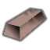
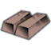
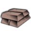
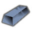
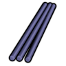
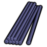
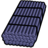
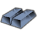
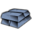

太空Vile本地补丁×1超钢级·太空·派洛梅特高温合金钢Pyromet
超钢级可塑成品 986 件:家具建筑674 · 防具142 · 穿戴件40 · 近战工具106 · 远程武器7 · 其它17
金属全谱467 + 常规硬性件324 + 重机电(舱体/发电机/扫描仪)140 + 飞船构件+persona武器51
顶替 整档替到 钛铁合金(986 件基准,含其下全部金属);比钢 +46/−1 件 —— 做不了 无菌瓦屋顶;钢做不了它能做 monosword、“宙斯”级涡轮机…

生效·ACore_SK
生效·BCore_SK
生效·CCore_SKThings/Item/Ingot StackCount (170,140,130)(176,131,136)
护甲 1.50/1.35/0.16 利钝 1.20/1.35 价值 30 质量 0.35 Bulk 0.35
stuff CorrosionResistant, Metallic, RuggedMetallic, SolidMetallic, StrongMetallic
HSK USLDBar, SuperBar
产自 Make Pyromet superalloy x35(电弧熔炉/Metal processing V)
源 Vile's Materials Science
Alloys_HighTech.xml
太空HSK本地补丁×1上游补丁×3超钢级·太空·司太立合金StelliteAlloy
超钢级可塑成品 986 件:家具建筑674 · 防具142 · 穿戴件40 · 近战工具106 · 远程武器7 · 其它17
金属全谱467 + 常规硬性件324 + 重机电(舱体/发电机/扫描仪)140 + 飞船构件+persona武器51
顶替 整档替到 钛铁合金(986 件基准,含其下全部金属);比钢 +46/−1 件 —— 做不了 无菌瓦屋顶;钢做不了它能做 monosword、“宙斯”级涡轮机…
① 起点 · Core_SK 的 Defs 写 Things/Item/Ingot (125,146,178)

ACore_SK BCore_SK
BCore_SK CCore_SK
CCore_SK② Vile 换成 Things/Item/Material/Stellite (128,126,176) ← Alloys_HighTech.xml

aVile's Materials Science
bVile's Materials Science
cVile's Materials Science③ 生效(终态) Things/Item/Ingot (125,146,178) ← 10_Vile贴图还原.xml
 ACore_SK
ACore_SK
BCore_SK
CCore_SKThings/Item/Ingot StackCount (125,146,178)(128,126,176)贴图链 3 段
护甲 1.50/1.40/0.14 利钝 1.35/1.50 价值 35 质量 0.35 Bulk 0.35
stuff CorrosionResistant, Metallic, RuggedMetallic, SolidMetallic, StrongMetallic
HSK USLDBar, SuperBar
产自 Make Stellite superalloy x25(电弧熔炉/Metal processing V) ; Smelt stellite alloy(无工作台)
源 Core_SK
Items_Resource_Alloys_Hightech.xml